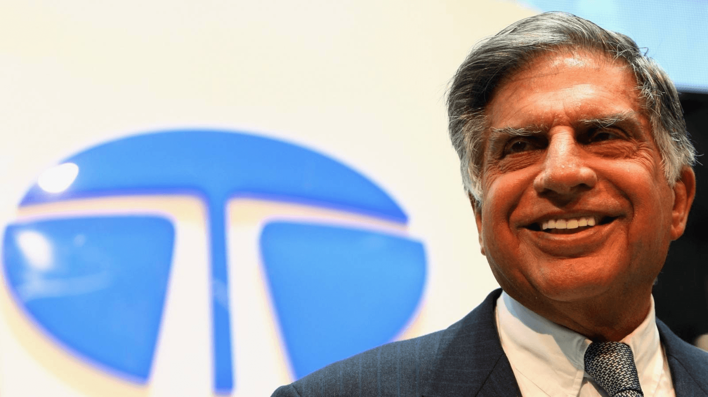

Ratan Naval Tata
He Prove that the humanity is still alive...

Ratan Tata
Here is a Timeline of Ratan Tata
1937 : Born on December 28 in Bombay, India.
1955: He completed his schooling at Campion School, Mumbai.
1962: He graduated from Cornell University in the U.S. with a degree in Architecture.
1962: Tata joined Tata Group as an assistant to the director of Tata Steel.
1970s : Early Mentorship from J.R.D. Tata.
1971 : Became the director of Tata Industries, overseeing several key projects.
1981 : Taking Over the Reins at Tata Industries.
1991 : Becoming Tata Group’s Chairman.
2014 : The Padma Vibhushan Award.
2024: He was passed away from earth on 9 october 2024 at a Mumbai hospital.
"In the pursuit of excellence,humility remains the truest guide."
If you have time,read more wikipedia entry...
Site designed by Ragul